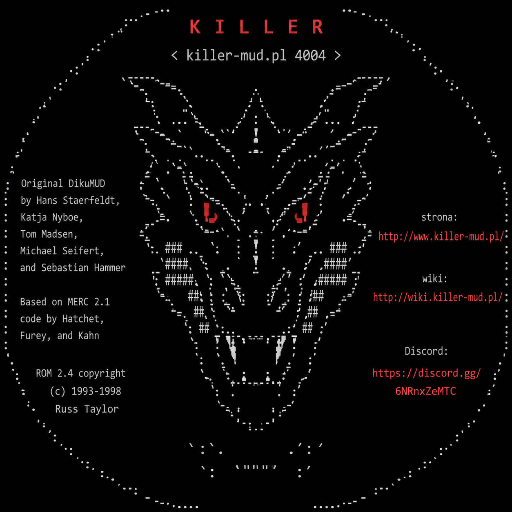

KillerMudClient — lista zmian
✨ Nowości
- gold corner badge for room notes, sharable with the community
- manual free-text notes on rooms, shown on hover
- notification sound for chat and per-trigger matches
🐛 Poprawki
- keep a room's auto marker symbol when adding a note to it
Szczegóły na GitHubie →
✨ Nowości
- warn on spell shortcut buttons the caster can't cast yet
🐛 Poprawki
- stop rebuilding every member row on each GMCP tick
- stop hanging forever on a door that never opens (#34)
Szczegóły na GitHubie →
✨ Nowości
- rebuild full-window view, add artifact catalog, fix text overlap
- add a built-in COMPACT layout for half-screen multibox use
- Lua scripting for aliases/triggers/timers, shared function library, mirror-leader-position
- plan the whole visit order upfront instead of pure greedy nearest-neighbor
- Killeropedia skill tree, artifact mapping, and per-profile automation settings
- add STOP to right-click context menu
- parse structured fields out of captured "help" text
- add "/mapuj <klasa>" to auto-capture skill/spell help text
- edit timers/aliases/triggers inline, not at the top of the list
- promote Drużyna/Podróż/Walka/Farma to top-level panels
- move Autokill into Automaty → Farma, add select-area to map menu
- add center/follow, autowalk and autoscan to right-click menu
- auto-recast when the group leader snaps their fingers
- cast heal spell mid-combat, not just on room arrival
- highlight rooms with missing spells gold/orange
- add Autofollow — group member auto-catches-up to leader
- color auto-farm's visited rooms yellow + fix traversal wandering
- add auto-farm — autonomous room-by-room grinding
🐛 Poprawki
- resolve two real test hangs and a xunit.v3 parallelism gap
- stop spamming "already standing" and skipping mobs
- expand "/recast" for triggered commands, not just typed ones
- only kill configured mobs Room.People confirms present
- delay autowalk resume after standing + more knockdown phrases
- cap autowalk low-movement recovery + auto-farm improvements
- send MUD keyword targeting for AutoAssist NPC orders
- cap a single output line at 64KB
- bound regex match time to prevent ReDoS hangs
🔧 Pozostałe zmiany
- build and test on windows-latest instead of ubuntu-latest
Szczegóły na GitHubie →
✨ Nowości
- expand trick info from the wiki + color on map, readable font
- color-code teacher tooltip skills by known/learnable/not-learnable
- color-code spell-mob tooltip spells by known/missing/learnable
- annotate missing "spell" entries with book source mobs
- annotate "skill" output with who can train you further
- rename marker "O" from "Do wyjaśnienia" to "Drzwi"
🐛 Poprawki
- make skill-trainer annotation tolerant of ANSI color codes
Szczegóły na GitHubie →
✨ Nowości
- extend "Szukaj..." to spellbook mobs (marker "B")
- rework "Szukaj nauczyciela" into an autocompleting "Szukaj..."
🐛 Poprawki
- add Autoscan/Autokill to the terminal-overlay card's flyout too
Szczegóły na GitHubie →
✨ Nowości
- add "Szukaj nauczyciela" search; fix nearest-Rent missing markers
- show an "Aktualizuj" button in the header when an update is found
Szczegóły na GitHubie →
✨ Nowości
- check for a newer client version; go Windows-only
- auto-mark spellbook-mob rooms and import community markers
- hover teacher rooms on the map to see what they train
- arrow-key movement, search-by-vnum, and nearest-Rent lookup
🐛 Poprawki
- gate NPC assist on confirmed combat, fix rule-merge identity
Szczegóły na GitHubie →
✨ Nowości
- surface marker reporting in the map context menu; render markers in-square
- add bulk community marker reporting (Phase 2)
- add Walka section with autostand and autowield
- always-visible scrollback scrollbar; drop skill-ready toast
🐛 Poprawki
- keep reconcile inside try/catch so a bad merge can't kill the sync timer
- sync multibox folders/triggers proactively, not just on next save
- merge concurrent saves instead of silently overwriting
- keep overlay columns clear of the scrollback scrollbar
Szczegóły na GitHubie →
✨ Nowości
- replace marker preset list with fixed 10-symbol legend
- add local room markers (Phase 1 of shared map annotations)
- merge hour/sky into the timer bar; show active skill cooldowns
- pin live hour/sky to the timer strip; skip re-mapping known rares
- announce skills coming off cooldown in the timer strip
- show live world time and weather in Terminal tab title
- add random-book class recognition
- add Tatuaże and Artefakty catalog tabs
🐛 Poprawki
- correct skill-timeout package name; persist rarelist refresh incrementally
- fold diacritics in book-class matching; use rarelist all
🔧 Pozostałe zmiany
- data: ship fully-mapped rarelist as the bundled Killeropedia asset
- Feature/killeropedia tattoos and artifacts (#6)
Szczegóły na GitHubie →
🐛 Poprawki
- number the fork independently of upstream; fix stale download button
- clean up botched merge conflict resolution from PR #3
🔧 Pozostałe zmiany
- move "by Grzyboll" onto the title line, link Laszlowaty's name
- rebrand landing page for the fork, trim to the header
- Feature/UI polish (#3)
- Update release.yml
Szczegóły na GitHubie →
✨ Nowości
- rename /idz commands to /walk, add /walk leader
- add a dedicated Chat panel with taskbar flash on new messages
- rework terminal overlays into a dedicated TRANSPARENCY mode
- add floating transparent terminal overlay panels
- add forward/backward buttons to terminal search
- add configurable widget fonts
- named, savable UI layouts with auto-hide support
- copy terminal selection as image
- konta z hasłem (DPAPI) i autologowaniem, usuwanie kont, poprawki UI popupu
- wymagane buffy (panel + /recast) i rozbicie postaci na osobne panele dokowalne
- znaczniki miejsc śmierci (ostatnie 10, per konto) z autowalkiem
🐛 Poprawki
- pin gh release create to the fork repo, not upstream
- let hiding HP/MV bars actually reclaim their columns
- shorten send button and polish search/command placeholders
- przypinaj panel przy dropie na skrajny panel krawędzi
- allow reconnect after remote disconnect
- stabilize auto-hidden dock panels
- Char.Affects z pustym name pokazuje desc zamiast byc pomijany
- ikona wczytywana programowo (nie przez XAML), app startuje
🔧 Pozostałe zmiany
- document fork branch model and update release process docs
- rework release pipeline for upstream-relative dev versioning
- Aktualizacja mapy i teł zoom-out
- Aktualizacja mapy świata
- Stabilny test menu drużyny w trybie Lord
- Przełączane zestawy buffów
- Triggery/aliasy/timery: właściwa poprawka ucinanych przycisków
- Triggery/aliasy/timery: napraw długie wzorce zasłaniające przyciski
- Widget drużyny: paski HP/MV zamiast tekstu
- Poprawne przyciski w panelu buffów
- Spokojniejszy interfejs klienta
- Anulowanie niezapisanych zmian mappera
- Czysty build bez ostrzeżeń
- Pomoc opisuje mapowanie i aliasy
- Paczka Killeropedii zawiera zadania
- Zakładka zadań w Killeropedii
- Aktualna liczba wpisów katalogu lore w testach
- Lore: bagna i zamek/twierdza w okolicach Arras
- Wybor i auto-detekcja kodowania polskich znakow (ISO-8859-2 / Windows-1250)
- Wieloliniowe pole komend w terminalu (Enter wysyla, Shift+Enter nowa linia)
- Komenda /map show <vnum>
- Tworzenie i przebudowa obszarów mapy
- Edytor mapy w trybie lorda
- Samodzielny prototyp Killeropedii w HTML
- Aktualizacja projektu mapy Starego Kontynentu
- Odbudowane lore miast Starego Kontynentu
- Etapowy warsztat tworzenia krain KillerMUD
- Źródła lore wyłącznie z katalogu area-lore
- Pozwól triggerom wywoływać aliasy przez alias(regexAliasa)
- Stabilne wyświetlanie końca terminala
- Komendy wykonywane po autoasyście
- Wersja aplikacji na stronie GitHub Pages
- Powiadomienia o aktualizacjach bez limitu API
- Aktualizacja mapy
- Komenda zapisu lokacji i wyróżnienie niezapamiętanych czarów
- Stabilny test kolejki triggerów w CI
- Aktualizacje mapy i Killeropedii bez wymiany aplikacji
- Licznik bezczynności i aktualizacja mapy
- Logowanie i serwer per konto
- Obsługa członków grupy w komendzie /idz
- Stabilne boczne karty po restarcie i imporcie
- Wykluczenia mobów w autoassiście
- Kopiowanie zaznaczenia terminala skrótem Ctrl+C
- Księgowa oprawa i wygodniejsza nawigacja Killeropedii
- Poprawne menu członków grupy w trybie Lord
- Ikony bagien w zunifikowanej paczce Nortantis
- Płynny terminal bez zawijania wierszy
- Lokalne repozytorium KillerMUD poza śledzeniem
- Nortantis: zunifikowana paczka grafiki i migracja projektów
- Nortantis: zestaw ikon RPG i materiały robocze
- Mapa: aktualizacja obrazu Starego Kontynentu
- Lore: konteksty Easterialu i północnego wschodu
- Menu goto drużyny w trybie Lord
- Numerowane oznaczenia członków grupy na mapie
- Przycisk Discord w górnym pasku
- Aktualizacja mapy Starego Kontynentu
- Opcjonalne czyszczenie i zaznaczanie pola komendy
- Mapa: cień poprzedniego poziomu
- Mapa: imiona członków drużyny przy znacznikach
- Polskie etykiety i walidacja danych lore
- Widoczna wersja strony przy limicie GitHub API
- Odporność wydania na równoległy push wersji
- Rozszerzenie lore Starego Kontynentu
- Wygodne rozwijanie folderów automatów
- Tryb lorda i stabilny wybór poziomu mapy
- Lore Easterialu i jego okolic
- Killeropedia lore i izolowana walidacja buildów
- Powiadomienie o dostępnej aktualizacji
- Stabilne przypięte panele przy zmianie i zapisie układu
- Wyszukiwanie terminala w pasku komend
- Autowalk: pełna sekwencja otwierania zamkniętych bram
- Potwierdzenie usuwania folderów automatyzacji
- Widoczne komendy automatyzacji w terminalu
- Automatyczne przewijanie list podczas przeciągania
- Ostrzeżenie o kończących się affectach
- Countdown aktywnych timerów w terminalu
- Odświeżona mapa Starego Kontynentu
- Potwierdzenia przed usuwaniem danych
- Triki nauczycieli w Killeropedii
- Czyste paczki wydań z pojedynczym plikiem
- Terminal bez zbędnego paska filtrów
- Kopia i import wszystkich ustawień
- Autowalk: wstawanie po przewróceniu na podstawie GMCP
- Pomoc aplikacji z opisem dostępnych komend
- Wyszukiwanie i szybsze przewijanie terminala
- Enter zatwierdza formularze kont i dodawanie buffa
- Killeropedia: podświetlanie wyszukanych fraz
- Killeropedia: zakładka Mapa Świata
- Klasyczne potwory RPG w paczce Nortantis
- Materiały map Nortantis i paczki ikon RPG
- Ikony RPG Nortantis i miejska paczka assetów
- Narzędzia i materiały robocze map Nortantis
- Uproszczenie map i eksport roomów do Nortantis
- Mapa: ręczna edycja ilustracji lokacji
- Kalibrator obrazu map: możliwość mocniejszego krycia z rozjaśnieniem obrazu (suwak do 2.0, wartości powyżej 1 rozjaśniają biały overlayem)
- Buffy: przycisk recast na samej górze widgetu oraz castowanie pojedynczego spella po kliknięciu w jego kafelek
- Usprawnienia widgetów i folderów
- KILLEROPEDIA - wiecej danych
- KILLEROPEDIA - usprawnienia
- KILLEROPEDIA - lista nauczycieli i ksiag
- Lepsza paleta kolorow
- Usprawnienia mapy
- Wydajniejszy terminal i stabilne przywracanie paneli
- Ulepszenie mapy arras.
- Poprawa publikacji aktualnego changeloga na GitHub Pages
- Stabilizacja cleanupu testów Avalonia Headless
- Stałe proporcje przypiętych paneli
- Rozbudowa automatów o foldery i import JSON
- Foldery notatek i lokacji autowalk (FolderTreeView bez wlacz/wylacz)
- Reuzywalny FolderTreeView i foldery w panelu automatyzacji
- Generyczny model folderow i persystencja (FolderNode, FolderId)
- Rozdzielenie aliasow od triggerow w panelu automatyzacji
- Rejestracja nowej postaci na MUD-zie z popupu wyboru konta
- Wznawianie autowalk po zakończeniu walki
- Wznawianie przerwanej podróży autowalk komendą /idz
- Stabilizacja headless-owych testów UI w CI
- Zakładki krawędziowe rozwijane na pół ekranu
- Mapy lokacji, lokalny kalibrator i sprzątanie plików roboczych
- Skill mapy w repozytorium i przenośne skrypty kalibracji
- Mapa/terminal: płynniejsza zmiana czcionki w oknie MUD-a
- Mapa: widoczność członków drużyny z GMCP
- Mapa: porządek w nagłówku
- Ulepsz nagłówek i prosty widok mapy
- Wyłącz stare tła na warstwach z atlasem
- Dodaj tła krasnoludzkiej fortecy i Carrallak
- Zmniejsz krycie efektów terenu na mapie
- Dodaj klimatyczne tła mapy Starego Kontynentu
- build changelog from git commits, not empty PR notes
- prettify changelog notes for end users
- deploy Pages from the release run itself
- publish changelog to GitHub Pages on release
- Remove terminal quick command bar
- Fix map area switching focus
- Improve widget button styling
- isolate profile settings from user data
- Allow sending empty commands
- Add selectable ANSI color schemes
- move Autoassist and Ordery into Settings panel
- Increase mapper room spacing
- Add persistent terminal word wrap setting
- Center map after location change
- Draw room highlights inside map tiles
- Dodaj zamykanie podzielonego widoku terminala
- Fix restoring closed dock panels
- Allow manual CI runs via workflow_dispatch
- re-run CI to check for flaky test
- Rename MudClientStarter to KillerMudClient across the project
- Add .nojekyll to docs to trigger Pages deploy via Actions
- Update README with current features, screenshot, and build/release docs
- Make DPAPI password tests platform-aware for Linux CI
- Add CI, release workflow with version bumping, and GitHub Pages site
- Add auto-assist and group orders panels with automation policies
- Add autowalk recovery policy and related MainWindowViewModel improvements
- Optimize map rendering and add biome backdrops
- command stacking: separator ; konfigurowalny w ustawieniach, działa w aliasach/triggerach/timerach
- focus: pierwszy znak po powrocie do okna zaznacza cały input zamiast dopisywać
- autowalk: double-click podczas marszu czyści trasę i wyznacza podgląd nowej; przycisk IDŹ
- UI: pionowe paski HP/MV po bokach terminala zamiast paska górnego
- UI: dokowalne panele (Dock.Avalonia) zamiast sztywnego layoutu
- autowalk: przerywanie po 5 kolejnych przeliczeniach trasy z rzędu
- okno wyjścia MUD: wirtualizacja renderowania zamiast jednego SelectableTextBlock
- MCCP2: dekompresja zlib strumienia telnet
- panel postaci: status mema (Char.MemSpell GMCP) - zapamietane zaklecia pogrupowane po kregach, osobno te w trakcie memowania
- globalne wpisy w profilach: notatki, reguly, timery i lokacje wspoldzielone miedzy profilami (IsGlobal)
- ikona w nagłówku okna przez AvaloniaResource w csproj + Icon w XAML
- ikona: killer.png z glównego folderu do Assets, użyta jako ikona okna i paska zadań
- ikona skrzyżowane miecze + zmiana nazwy na KillerMUD Klient
- wersjonowanie buildów: beta/release, Version w Directory.Build.props, publish.sh, aktualizacja skryptów .bat
- ujednolicona paleta terminala.
- Po kliknięciu w output MUD-a focus na input z zaznaczeniem całego tekstu
- Add autowalk: pathfinding, named locations, route drawing, GMCP door handling
- GMCP Char.Group/Affects/Condition + drużyna z mapy + wieloliniowe aliasy/triggery
- Add publish-mac.bat for cross-compiling macOS builds
- Add profiles, timers, alias/trigger editor, app settings and UI polish
- Initial commit
- Initial commit
Szczegóły na GitHubie →